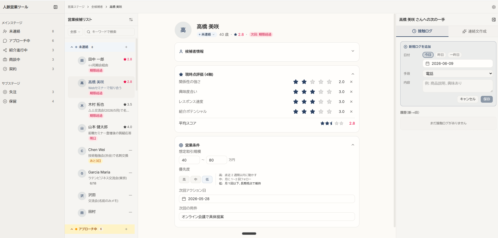

人脈営業ツールに
記憶を持たせて公開する
リロードで消えていた画面に、Notion を保存先として記憶を持たせ、
Vercel で誰でも開けるURLとして公開しました。
AI-Driven School 第7回宿題（4ヶ月目）/ personal-network-sales
画面の編集が Notion に保存され、
リロードしても・別の端末で開いても 残る
「見た目だけ・更新で消える」状態から、データが外部に永続化される状態へ
編集すると Notion に書き込まれ、画面を開くたびに Notion から取り直す。 だからリロードでも別端末でも同じ最新データが出る。
ここから先、章ごとに説明していきます。
A. 今回やったこと — 「消える画面」を「残る画面」に
前回までの人脈営業ツールは、見た目と操作感はできていたが、編集しても更新（リロード）すると元に戻る状態でした。データが ブラウザの一時的なメモリにしか無かったからです。
今回の課題「自分の画面に記憶を持たせる」は、この編集を外部のデータベースに保存して消えなくし、さらに公開して誰でもURLで開けるようにすることです。
- 候補者を別ステージに動かしても、リロードで元に戻る
- データは 自分の PC のブラウザの中だけ。他の人・他の端末からは見られない
- URLが無いので「動くもの」を人に見せられない
- 編集が Notion に保存され、リロードしても残る
- 毎回 Notion から取り直すので、別の端末で開いても同じ最新データ
- 公開URLで誰でもブラウザから開ける（Vercel）
B. 何をどこに保存したか — 保存先マップ
すべてをデータベースに入れるのではなく、「人が編集するデータ」だけを Notion に、「変わらない定義・ルール」はリポジトリ（プログラム）に残す、という線引きをしました。
| データ | 保存先 | 理由 | 保持 |
|---|---|---|---|
| 候補者プロフィール全項目 | Notion（候補者DB） | ユーザーが編集する実データ | ✓ |
| 評価4軸（現在値のみ・履歴なし） | Notion（数値列） | 編集対象。履歴は営業に不要なので現在値に簡約 | ✓ |
| 進捗ステージ／優先度／アーカイブ | Notion（候補者DB） | 編集対象（今回まず配線したのがステージ） | ✓ |
| 接触ログ（1対多） | Notion（接触ログDB） | 時系列で増える編集データ。1欄では足りない | ✓ |
| 最終連絡日 | Notion（候補者DB） | 接触ログから派生して自動保存（連絡間隔の警告用） | ✓ |
| ステージ定義／順序／色 | リポジトリ | マスタ定義。AI の手元（コード）に置く | — |
| アプリ名・アイコン | リポジトリ | UI 設定（ユーザー編集なし） | — |
| candidates.json（サンプル30人） | リポジトリ → デモDBへ投入 | 実行時はロードせず、デモDBの初期データとしてのみ使用 | — |
C. なぜ保存先に Notion を選んだか
講義では保存先として Neon（クラウドのデータベース）が推奨されていました。それでも今回あえて Notion を選びました。理由とトレードオフを正直に書きます。
- 既存の営業業務がすでに Notion 上にあるので、そのまま流用できる
- 人が直接 DB を覗ける・編集できる（アプリを介さなくても運用が回る）
- 運用の変更コストがゼロ。今までの Notion の使い方を壊さない
- 「AI との距離」が遠くなる。Notion は人間向けの形なので、AI/プログラムから扱うには一手間かかる
- 専用DB（Neon等）に比べ、複雑なクエリや厳密な型は不得手
代償である「AI との距離」を埋めるため、アプリのルール・定義（ステージや色、画面構成）はリポジトリ＝AI の手元に残し、 人が編集する実データだけ Notion に置く。 こうすると「人が直接触れる手軽さ」と「AI が扱いやすい厳密な定義」の両取りになります。これが B 章の保存先マップの考え方です。
D. どうやって記憶させ・公開したか（仕組み）
① 保存は「サーバー側の処理」で Notion に書く
画面で候補者を動かすと、Server Action（サーバー側で動く保存処理）が Notion の進捗状況を更新する。画面は先に動かしておき（楽観的更新）、保存が失敗したら元に戻して通知。「取り消し」を押したときも Notion に反映する。
② 表示は「毎回 Notion から取り直す」
トップページを 毎リクエスト動的取得（force-dynamic）に設定。ビルド時に焼き込まず、開くたびに Notion の最新を読む。だから別端末でリロードしても同じ最新データになる。
③ 公開用と本番用で「DBを2セット」に分けた
公開URLは無認証で誰でも見られるので、公開には実データを一切出さず、ダミーデータのデモDBに向ける。本番（実データ）はローカル専用。切替は環境変数のDB-ID だけ。個人情報の漏洩をゼロにする設計。
E. 実画面（公開・動作中）
公開URL personal-network-sales.vercel.app で実際に動いている画面です（ダミーデータのデモDBに接続）。

画像をクリックで原寸大表示
F. 工夫したポイント
① 作る前に実 Notion を調べてズレを発見
実装前に実際の Notion DB の構造を取得して検証。設計メモとのズレ（進捗が実は7段階だった等）を着手前に見つけ、手戻りを防いだ。
② AI 3体で計画を敵対的レビュー
着手前に複数のAIに計画を批判させ、Notion SDK の新方式（データソースAPI）が正しいことをコードで実証してから書き始めた。
③ 編集データと定義の線引き
「編集データ＝Notion／定義＝リポジトリ」をはっきり分け、Notion採用の代償（AIとの距離）を意識的に埋めた（C章）。
④ 公開用ダミーDBで漏洩ゼロ
DBを2セットにし、公開はダミーのデモDBへ。実データは一切公開URLに出さない。発表前に再投入してクリーンな状態でデモできる。
⑤ 体感を速くする楽観的更新＋整合
操作は即反映、保存は裏で実行。失敗時はロールバック＋通知。「取り消し」も Notion に反映して、画面とDBがズレないようにした。
⑥ 毎回最新を返す公開設計
トップを動的取得にして、別端末リロードでも確実に最新。キャッシュのタイミングに依存しない「記憶が効く」状態にした。
G. 苦戦したポイント
Vercel デプロイが何度も失敗（最大の難所）
ローカルでは成功するのに、Vercel だけ routes-manifest-deterministic.json が無い というエラーで連続失敗。bundler 変更・環境変数・公開フォルダ設定…と試しても直らなかった。
そこで当て推量をやめ、そのファイル名が Next.js 本体（複数バージョン）に存在するかをパッケージごと調べて検証。結果「Next 由来ではなく、Vercel 側のデプロイ後処理が要求するファイル」と判明。最終的に真因は 設定ファイルの 1 行（outputFileTracingRoot）で、これがアプリをサブフォルダに置いた構成と噛み合わず、Vercel のファイル探索をずらしていた。1行削除で解決。
想定と違った Notion の実構造
- 進捗ステージが想定の6段階でなく 実は7段階（「紹介進行中」）だった → コードを7段階に修正
- 「フリガナ／生年月日／想定取引規模」の列は実DBに無かった → デモDBに追加して対応
- 担当者は人物リンク型・間柄はDB間リレーション → 今回は書かない（読み取りのみ）と割り切り
「公開」ならではの落とし穴
- Claude Code(Max) と API は別課金。公開アプリのAI呼び出しはAPI従量課金になるため、公開では安価なモデル＋利用制限で守る設計に（AIは発展課題）
- 公開DBに実データがあると個人情報漏洩 → デモDBをダミー化（実データの削除という後戻りできない操作を慎重に実行）
- テスト環境ではサーバー専用コードが読み込めず落ちる → テスト用に差し替えて回避
まとめ — 覚えて帰ってほしい 3 つのこと
記憶の置き場は Notion、定義はコードに
「人が編集するデータ」だけを Notion に永続化し、「アプリの定義・ルール」はリポジトリに残す。リロードでも別端末でも消えない一方で、AI が扱う部分は手元に保てる。
Notion を選んだのは「人が直接見れる」から
推奨のNeonでなくNotionにしたのは、既存業務がNotion上にあり人が直接DBを覗けるから。代償の「AIとの距離」はハイブリッド構成で埋めた。トレードオフを理解した上での選択。
詰まったら「症状」でなく「原因」を検証で特定する
Vercel デプロイの連続失敗は、当て推量でなくファイルの実体を調べて真因（設定1行）にたどり着いた。事実を1つずつ確かめるのが結局いちばん速い。
「動く画面」から「記憶を持つ・公開された道具」へ。
編集が消えず、URLで誰でも開け、データの置き場と理由を自分の言葉で説明できる ── 今回でツールは「デモ」から「実際に使える道具の入り口」に変わりました。
巻末: 用語の補足
永続化（えいぞくか）
データを電源を切っても消えない場所（DB）に保存すること。今回は Notion が保存先。
Server Action（サーバーアクション）
ボタン操作をきっかけにサーバー側で実行される処理。今回は Notion への保存をここで行う。トークン等の秘密を画面に出さずに済む。
動的取得（force-dynamic）
ページを開くたびに毎回 DB から取り直す設定。ビルド時に固定しないので、常に最新が出る。
楽観的更新
ボタンを押した瞬間に画面を先に更新し、保存は裏で進める方式。体感が速い。失敗したら画面を元に戻す。
Vercel / デプロイ
作ったアプリをインターネット上に公開（デプロイ）するサービス。GitHub に push すると自動で公開URLが更新される。
DB 2セット（本番 / デモ）
実データの「本番DB」と、ダミーの「デモDB」を用意。公開はデモDBに向け、実データを外に出さない。切替は環境変数のIDだけ。